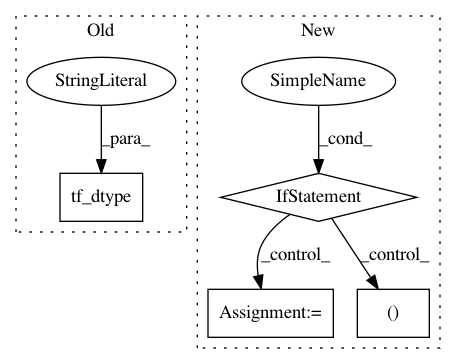

82a059d89d5f5ebc77c6a3f0b8ac4072a3979104,tensorforce/core/networks/layer.py,Nonlinearity,__init__,#Nonlinearity#Any#Any#Any#Any#Any#Any#Any#,201
Before Change
self.beta_learn = True
self.beta = None
else:
self.beta = tf.constant(float(beta), dtype=util.tf_dtype("float"))
def tf_apply(self, x, update):
if self.beta_learn:
After Change
padding: Pooling padding, one of "VALID" or "SAME".
self.pooling_type = pooling_type
if isinstance(window, int):
self.window = (1, window, window, 1)
elif len(window) == 2:
self.window = (1, window[0], window[1], 1)
else:
raise TensorForceError("Invalid window {} for pool2d layer, must be of size 2".format(window))
if isinstance(stride, int):
self.stride = (1, stride, stride, 1)
elif len(window) == 2:
self.stride = (1, stride[0], stride[1], 1)
In pattern: SUPERPATTERN
Frequency: 3
Non-data size: 4
Instances
Project Name: reinforceio/tensorforce
Commit Name: 82a059d89d5f5ebc77c6a3f0b8ac4072a3979104
Time: 2018-08-03
Author: alexkuhnle@t-online.de
File Name: tensorforce/core/networks/layer.py
Class Name: Nonlinearity
Method Name: __init__
Project Name: reinforceio/tensorforce
Commit Name: 0d3ad1aad015bf2e705448c35b237937dd6cf739
Time: 2018-07-25
Author: alexkuhnle@t-online.de
File Name: tensorforce/models/model.py
Class Name: Model
Method Name: tf_initialize
Project Name: reinforceio/tensorforce
Commit Name: 9000ad931722064fb2efe38649389a5154538ce4
Time: 2019-02-13
Author: alexkuhnle@t-online.de
File Name: tensorforce/core/layers/rnns.py
Class Name: Gru
Method Name: tf_apply